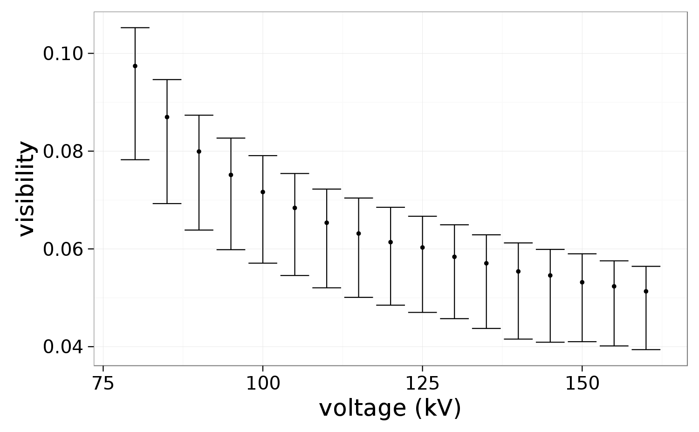

High-energy sources towards 2D applications
Goals and motivation of the project
- feasibility of phase contrast on tubes with \(>100\) kVp
- typical environment for medical, security and material science applications
- characterize physical quantities
Outline
- special thanks to Gordan, Thomas and Tine
- technical studies
- evaluation of KIT gratings
- pilatus detector
- applications
- biomedical: cartilage
- biomedical: lungs
- materials: powders
- materials: cement hydration
KIT gratings with Maria
- various grating sets for 30 and 45 \(\pi\) shift
-
short summary: gratings are ok, homogeneity and absorption
thickness are the main concerns.
- \(\lt 100\) μm gold forces the smaller focal spot (1 mm)
- visibility averaging 8-10% for most sets
- best configuration reaching 15%
Best configuration
- 100 μm G0, 140 μm G2, \(\pi\) shift 45 keV
- eiger 1M detector
- 80 kVp, 1 mm focal spot

Conclusions for our fabrication team
- 80 μm G0, 140 μm G2, \(\pi\) shift 45 keV
- pilatus CdTe detector

- increasing from 80 to 100 μm is very significant
- this is also the very minimum absorption thickness for the setup